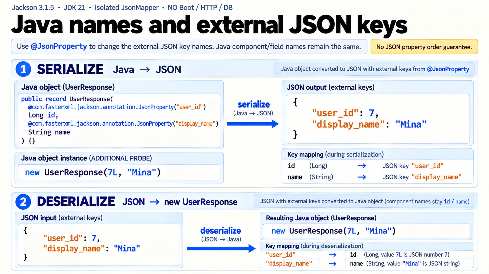

요청 JSON은 어떻게 DTO가 될까요?
같은 keyboard와 수량 2가 요청과 응답에 담기는 과정을 살펴봅니다.
P16 · JSON·Jackson / 원문 3.2 / 예제 예상값Controller 호출 전 · 요청 인자를 준비해요
Spring MVC가 Jackson 기반 메시지 변환기를 통해 요청 본문을 읽습니다.
HTTP 요청 JSON
POST /orders{
"product": "keyboard",
"quantity": 2
}Java 요청 객체
CreateOrderRequest
| 필드 | 타입 | 값 |
|---|---|---|
| product | String | "keyboard" |
| quantity | int | 2 |
OrderResponse create(@RequestBody CreateOrderRequest request) {강조는 학습 위치이며 실행 중인 줄을 뜻하지 않습니다. 아직 Controller 본문은 호출되지 않았습니다.
이 예제는 DB를 사용하지 않습니다. id 1L과 시각은 원문 코드의 고정값입니다.
1/3 · 요청 인자 준비 · 설명용 예상 장면
읽음 표시는 이 예제의 학습 확인용입니다. 자동 채점·API 실행 통과·과제 진도와 별도로 보관합니다.
원문의 Boot 4.1 · Java 25 별도 예제입니다. 현재 저장소의 서버를 실행하거나 실제 HTTP 요청을 보내지 않습니다.
원문 전체 보기 ↗JSON 계약의 이름·값·생성 규칙
Java 이름과 JSON 이름은 어떻게 연결할까?
원문 §2.3 · 추가 입력 실험 · P16MapperProof · Jackson 3.1.5 / JDK 21 · Boot·HTTP·DB·Java 25 미실행
Java 객체를 외부 이름으로 쓰기
추가 UserResponse(7L, "Mina")의 Java 프로퍼티 id·name을 user_id·display_name으로 씁니다. JSON에 id라는 키는 나오지 않습니다.

지금의 값과 계약
함께 읽을 코드
강조는 설명하는 코드 구간입니다. mapper 실험은 HTTP 요청을 보내지 않습니다.
@JsonProperty의 외부 이름은 쓰기와 읽기의 계약입니다. 아래 id=7·name=Mina는 원문 UserResponse 선언에 넣어 실행한 추가 입력이며, 기존 주문 예제의 id=1·keyboard와 별개입니다.
추가 실행 검증 로그 보기
PASS는 격리된 mapper 추가 실험의 assertion 로그입니다. 원문 예제의 출력·HTTP 응답과 구분합니다.
버전 차이와 추가 실행의 범위
원문과 위의 주문 예상 장면은 보존했습니다. 아래는 Jackson 3.1.5·JDK 21의 독립 mapper 실행과 Spring 7.0.9 MockMvc 추가 검사입니다. Boot 4.1.1·Java 25·DB·실제 HTTP 포트는 실행하지 않았습니다.
Jackson 3의 기본 unknown 필드 처리는 무시입니다. strict는 명시적으로 켜는 정책입니다. Enum은 기본 toString()을 사용하며, 위의 원문 Enum에는 재정의가 없어 PAID가 나옵니다. primitive의 명시적 null 입력은 기본 거부입니다. 애플리케이션 설정은 이 기본값을 바꿀 수 있습니다.
직접 실행한 원문 MapperExample은 {"name":"Kim","age":29}와 Kim:29를 출력했습니다. 추가 mapper 검사24개와 아래 MockMvc 검사11개도 통과했습니다.
같은 추가 Controller로 확인한 요청·응답 경계
원문 §3.2의 DTO와 반환식에 본문 호출 계수만 추가했습니다. JSON converter 하나를 명시 등록한 MockMvc 결과이므로 다른 consumes·converter·예외 처리 설정의 응답까지 보장하지 않습니다.
| 추가 입력 | 관찰 결과 | 이번 본문 호출 |
|---|---|---|
| JSON · keyboard / 2 · Accept JSON | 200 · 원문 고정 id1·시각 | 호출됨 |
| JSON · quantity "two" | 400 · 읽기 실패 | 호출되지 않음 |
| 같은 정상 본문 · text/plain | 415 · 읽을 converter 없음 | 호출되지 않음 |
| 같은 정상 본문 · Content-Type 없음 | 415 · 이 구성의 결과 | 호출되지 않음 |
| 정상 JSON · Accept application/xml | 406 · 응답 협상 실패 | 이미 호출됨 |
Jackson 3 기본값 변경 · Spring 메시지 변환기 · 확인 2026-10-20. Codex CLI gpt-6-luna 공식 원문 조사와 메인의 라이브 출처·실행 대조를 함께 기록했습니다.
추가 실행 전체 코드와 원시 출력
첫 파일만 원문 추출본이며 나머지 두 파일은 독립 추가 실험입니다. JPA의 순환·지연 로딩 예외는 이 실행에서 재현하지 않았습니다.
MapperExample.java
package example.demo;
import tools.jackson.databind.json.JsonMapper;
public class MapperExample {
record Profile(String name, int age) {}
public static void main(String[] args) throws Exception {
JsonMapper mapper = JsonMapper.builder().build();
String json = mapper.writeValueAsString(new Profile("Kim", 29));
Profile profile = mapper.readValue(json, Profile.class);
System.out.println(json);
System.out.println(profile.name() + ":" + profile.age());
}
}
P16MapperProof.java
package example.proof;
import java.time.*;
import java.util.*;
import com.fasterxml.jackson.annotation.*;
import tools.jackson.databind.*;
import tools.jackson.databind.json.JsonMapper;
/** 원문 P16 규칙을 추가 입력으로 확인한다. Boot/MVC/DB 실행이 아니다. */
public class P16MapperProof {
record UserResponse(@JsonProperty("user_id") Long id,
@JsonProperty("display_name") String name) {}
record AccountResponse(Long id, String name,
@JsonInclude(JsonInclude.Include.NON_NULL) String nickname,
@JsonIgnore String passwordHash) {}
record EventResponse(Instant occurredAt, LocalDate dueDate) {}
record LocalEvent(LocalDateTime at) {}
enum OrderStatus { READY, PAID, CANCELLED }
record OrderResponse(OrderStatus status) {}
enum PaymentStatus {
@JsonProperty("paid") PAID,
@JsonProperty("refunded") REFUNDED
}
record PaymentResponse(PaymentStatus status) {}
record EmailCommand(String email) {}
@JsonIgnoreProperties(ignoreUnknown=true)
record ExternalWebhook(String eventId, String type) {}
record Quantity(int quantity) {}
record NullableQuantity(Integer quantity) {}
static final class ImmutableName {
private final String name;
@JsonCreator ImmutableName(@JsonProperty("name") String name) { this.name=name; }
public String getName() { return name; }
}
static void check(String name, boolean condition) {
if(!condition) throw new AssertionError(name);
System.out.println("PASS " + name);
}
static boolean rejected(Runnable action) {
try { action.run(); return false; } catch (tools.jackson.core.JacksonException expected) { return true; }
}
public static void main(String[] args) {
JsonMapper mapper=JsonMapper.builder().build();
String renamed=mapper.writeValueAsString(new UserResponse(7L,"Mina"));
check("property-out",mapper.readTree(renamed).get("user_id").asLong()==7 && mapper.readTree(renamed).get("display_name").asString().equals("Mina") && !mapper.readTree(renamed).has("id"));
UserResponse read=mapper.readValue("{\"user_id\":7,\"display_name\":\"Mina\"}",UserResponse.class);
check("property-in",read.equals(new UserResponse(7L,"Mina")));
String accountNull=mapper.writeValueAsString(new AccountResponse(7L,"Mina",null,"hash-demo"));
check("non-null-omits-null",!mapper.readTree(accountNull).has("nickname"));
String accountEmpty=mapper.writeValueAsString(new AccountResponse(7L,"Mina","","hash-demo"));
check("non-null-keeps-empty",mapper.readTree(accountEmpty).has("nickname") && mapper.readTree(accountEmpty).get("nickname").asString().isEmpty());
check("ignore-output",!mapper.readTree(accountEmpty).has("passwordHash"));
AccountResponse ignored=mapper.readValue("{\"id\":7,\"name\":\"Mina\",\"nickname\":null,\"passwordHash\":\"supplied\"}",AccountResponse.class);
check("ignore-input",ignored.passwordHash()==null);
String event=mapper.writeValueAsString(new EventResponse(Instant.parse("2026-09-29T00:00:00Z"),LocalDate.parse("2026-09-29")));
check("instant-iso",mapper.readTree(event).get("occurredAt").asString().equals("2026-09-29T00:00:00Z"));
check("local-date",mapper.readTree(event).get("dueDate").asString().equals("2026-09-29"));
String local=mapper.writeValueAsString(new LocalEvent(LocalDateTime.parse("2026-09-29T09:00:00")));
check("local-no-offset",mapper.readTree(local).get("at").asString().equals("2026-09-29T09:00:00"));
check("offset-same-instant",OffsetDateTime.parse("2026-09-29T09:00:00+09:00").toInstant().equals(Instant.parse("2026-09-29T00:00:00Z")));
check("enum-default-out",mapper.readTree(mapper.writeValueAsString(new OrderResponse(OrderStatus.PAID))).get("status").asString().equals("PAID"));
check("enum-contract-out",mapper.readTree(mapper.writeValueAsString(new PaymentResponse(PaymentStatus.PAID))).get("status").asString().equals("paid"));
check("enum-contract-in",mapper.readValue("{\"status\":\"paid\"}",PaymentResponse.class).status()==PaymentStatus.PAID);
check("enum-unknown-reject",rejected(()->mapper.readValue("{\"status\":\"PENDING\"}",OrderResponse.class)));
check("unknown-default-false",!mapper.isEnabled(DeserializationFeature.FAIL_ON_UNKNOWN_PROPERTIES));
EmailCommand typo=mapper.readValue("{\"emial\":\"m@example.com\"}",EmailCommand.class);
check("unknown-default-typo",typo.email()==null);
JsonMapper strict=JsonMapper.builder().enable(DeserializationFeature.FAIL_ON_UNKNOWN_PROPERTIES).build();
check("unknown-strict-reject",rejected(()->strict.readValue("{\"emial\":\"m@example.com\"}",EmailCommand.class)));
ExternalWebhook webhook=strict.readValue("{\"eventId\":\"evt-1\",\"type\":\"paid\",\"extra\":true}",ExternalWebhook.class);
check("unknown-dto-exception",webhook.eventId().equals("evt-1") && webhook.type().equals("paid"));
check("null-primitive-reject",rejected(()->mapper.readValue("{\"quantity\":null}",Quantity.class)));
check("null-wrapper-allowed",mapper.readValue("{\"quantity\":null}",NullableQuantity.class).quantity()==null);
check("immutable-creator",mapper.readValue("{\"name\":\"Mina\"}",ImmutableName.class).getName().equals("Mina"));
check("immutable-getter-output",mapper.readTree(mapper.writeValueAsString(new ImmutableName("Mina"))).get("name").asString().equals("Mina"));
check("object-key-order",mapper.readTree("{\"id\":1,\"name\":\"Mina\"}").equals(mapper.readTree("{\"name\":\"Mina\",\"id\":1}")));
check("array-order",!mapper.readTree("[1,2]").equals(mapper.readTree("[2,1]")));
System.out.println("RENAMED " + renamed);
System.out.println("ACCOUNT_NULL " + accountNull);
System.out.println("ACCOUNT_EMPTY " + accountEmpty);
System.out.println("EVENT " + event);
System.out.println("LOCAL " + local);
}
}
P16MvcProof.java
package example.proof;
import java.time.Instant;
import org.springframework.http.MediaType;
import org.springframework.http.converter.json.JacksonJsonHttpMessageConverter;
import org.springframework.test.web.servlet.*;
import org.springframework.test.web.servlet.setup.MockMvcBuilders;
import org.springframework.test.web.servlet.request.MockMvcRequestBuilders;
import org.springframework.web.bind.annotation.*;
import tools.jackson.databind.json.JsonMapper;
/** 원문 §3.2 타입·반환식을 사용한 독립 MockMvc 실험. 실제 포트/Boot/DB는 없다. */
public class P16MvcProof {
record CreateOrderRequest(String product,int quantity) {}
record OrderResponse(long id,String product,int quantity,Instant createdAt) {}
@RestController @RequestMapping("/orders")
static class OrderController {
int calls;
@PostMapping OrderResponse create(@RequestBody CreateOrderRequest request) {
calls++;
return new OrderResponse(1L,request.product(),request.quantity(),Instant.parse("2026-09-29T00:00:00Z"));
}
}
static void check(String name,boolean ok) { if(!ok)throw new AssertionError(name);System.out.println("PASS "+name); }
public static void main(String[] args)throws Exception {
OrderController controller=new OrderController();
JsonMapper mapper=JsonMapper.builder().build();
MockMvc mvc=MockMvcBuilders.standaloneSetup(controller).setMessageConverters(new JacksonJsonHttpMessageConverter(mapper)).build();
String valid="{\"product\":\"keyboard\",\"quantity\":2}";
MvcResult good=mvc.perform(MockMvcRequestBuilders.post("/orders").contentType(MediaType.APPLICATION_JSON).accept(MediaType.APPLICATION_JSON).content(valid)).andReturn();
check("normal-200",good.getResponse().getStatus()==200);
check("normal-body",mapper.readTree(good.getResponse().getContentAsString()).equals(mapper.readTree("{\"id\":1,\"product\":\"keyboard\",\"quantity\":2,\"createdAt\":\"2026-09-29T00:00:00Z\"}")));
check("normal-controller-called",controller.calls==1);
MvcResult invalid=mvc.perform(MockMvcRequestBuilders.post("/orders").contentType(MediaType.APPLICATION_JSON).content("{\"product\":\"keyboard\",\"quantity\":\"two\"}")).andReturn();
check("bad-number-400",invalid.getResponse().getStatus()==400 && invalid.getResolvedException() instanceof org.springframework.http.converter.HttpMessageNotReadableException);
check("bad-number-no-controller",controller.calls==1);
MvcResult text=mvc.perform(MockMvcRequestBuilders.post("/orders").contentType(MediaType.TEXT_PLAIN).content(valid)).andReturn();
check("text-415",text.getResponse().getStatus()==415);
check("text-no-controller",controller.calls==1);
MvcResult missing=mvc.perform(MockMvcRequestBuilders.post("/orders").content(valid)).andReturn();
check("no-content-type-415",missing.getResponse().getStatus()==415);
check("no-content-type-no-controller",controller.calls==1);
MvcResult accept=mvc.perform(MockMvcRequestBuilders.post("/orders").contentType(MediaType.APPLICATION_JSON).accept(MediaType.APPLICATION_XML).content(valid)).andReturn();
check("accept-xml-406",accept.getResponse().getStatus()==406);
check("accept-xml-controller-already-called",controller.calls==2);
System.out.println("NORMAL_BODY "+good.getResponse().getContentAsString());
}
}
MapperExample.stdout.txt
{"name":"Kim","age":29}
Kim:29
P16MapperProof.stdout.txt
PASS property-out
PASS property-in
PASS non-null-omits-null
PASS non-null-keeps-empty
PASS ignore-output
PASS ignore-input
PASS instant-iso
PASS local-date
PASS local-no-offset
PASS offset-same-instant
PASS enum-default-out
PASS enum-contract-out
PASS enum-contract-in
PASS enum-unknown-reject
PASS unknown-default-false
PASS unknown-default-typo
PASS unknown-strict-reject
PASS unknown-dto-exception
PASS null-primitive-reject
PASS null-wrapper-allowed
PASS immutable-creator
PASS immutable-getter-output
PASS object-key-order
PASS array-order
RENAMED {"user_id":7,"display_name":"Mina"}
ACCOUNT_NULL {"id":7,"name":"Mina"}
ACCOUNT_EMPTY {"id":7,"name":"Mina","nickname":""}
EVENT {"occurredAt":"2026-09-29T00:00:00Z","dueDate":"2026-09-29"}
LOCAL {"at":"2026-09-29T09:00:00"}
P16MvcProof.stdout.txt
PASS normal-200
PASS normal-body
PASS normal-controller-called
PASS bad-number-400
PASS bad-number-no-controller
PASS text-415
PASS text-no-controller
PASS no-content-type-415
PASS no-content-type-no-controller
PASS accept-xml-406
PASS accept-xml-controller-already-called
NORMAL_BODY {"id":1,"product":"keyboard","quantity":2,"createdAt":"2026-09-29T00:00:00Z"}
P16. JSON·Jackson 실무
P16. JSON·Jackson 실무 — 요청/응답 직렬화에서 막히는 것들
원문 전체 · 코드·설명·참고문헌 보기
Practical backend · P16
이 문서에서 볼 내용
Spring·DB를 직접 구현하는 실습
JSON은 문자열 문법이고 Jackson은 Java 객체와 그 문자열 사이를 변환하는 라이브러리다.
Spring MVC에서는HttpMessageConverter가@RequestBody와@ResponseBody의 실제 변환을 맡는다.
DTO, 명시적인 날짜·Enum 정책, 그리고 애플리케이션이 소유한ObjectMapper설정을 쓰면 대부분의 직렬화 장애를 예방한다.
011. 한 줄로 말하면
JSON은 객체·배열·문자열·수·불리언·null로 구성된 텍스트 형식이고, Jackson은 JSON을 Java 값으로 읽는 역직렬화(deserialization)와 Java 값을 JSON으로 쓰는 직렬화(serialization)를 담당한다. Spring Boot는 이 변환기를 MVC에 자동 등록하므로 컨트롤러는 바이트 스트림 대신 DTO를 주고받는다.
이 경계를 모르면 400, 날짜 형식 불일치, 응답 직렬화 중 500이 난다. JPA 엔티티를 그대로 반환하면 지연 로딩·양방향 연관관계·비밀번호가 JSON 경계까지 새어 나온다. 결론은 외부 계약을 DTO와 명시적 설정으로 고정하는 것이다.
022. 당장 알아야 할 것2.1 요청과 응답은 DTO로 고정한다 · 2.2 @RequestBody가 동작하는 지점 · 2.3 이름을 바꿀 때는 계약에 명시한다 · 2.4 포함·무시는 보안과 계약의 문제다
012.1 요청과 응답은 DTO로 고정한다
public record CreateMemberRequest(
@jakarta.validation.constraints.NotBlank String name,
@jakarta.validation.constraints.Email String email
) {}
public record MemberResponse(Long id, String name, String email) {}
@org.springframework.web.bind.annotation.RestController
@org.springframework.web.bind.annotation.RequestMapping("/members")
class MemberController {
@org.springframework.web.bind.annotation.PostMapping
MemberResponse create(
@org.springframework.web.bind.annotation.RequestBody CreateMemberRequest request) {
return new MemberResponse(1L, request.name(), request.email());
}
}클라이언트는 {"name":"Kim","email":"kim@example.com"}을 보내고 Jackson은 record의 canonical constructor를 호출한다. 반환 record는 JSON 객체로 쓰인다. 응답 DTO에는 DB 엔티티의 내부 필드가 없으므로 API 계약과 저장 모델의 변경도 분리된다.
022.2 @RequestBody가 동작하는 지점
@RequestBody는 Jackson 호출 자체가 아니다. RequestMappingHandlerAdapter가 요청의 Content-Type과 대상 Java 타입을 보고 등록된 HttpMessageConverter를 선택한다.
JSON이면 Jackson 기반 converter가 body의 InputStream을 DTO로 읽는다. 메서드 반환값에 @ResponseBody가 있거나 컨트롤러가 @RestController이면 같은 계열의 converter가 반환 객체를 JSON으로 쓴다.
따라서 다음 세 가지가 맞아야 한다.
Content-Type: application/json
Accept: application/jsonContent-Type이 빠지거나 text/plain이면 JSON 본문이어도 적절한 converter를 못 골라 415 Unsupported Media Type이 된다. JSON 문법은 맞지만 Java 타입이 안 맞으면 400이 된다.
032.3 이름을 바꿀 때는 계약에 명시한다
public record UserResponse(
@com.fasterxml.jackson.annotation.JsonProperty("user_id") Long id,
@com.fasterxml.jackson.annotation.JsonProperty("display_name") String name
) {}Jackson 2의 애노테이션은 com.fasterxml.jackson.annotation 패키지다. Boot 4/Jackson 3에서 @JsonProperty처럼 jackson-annotations에 남은 애노테이션은 이 패키지를 계속 쓰지만, databind 관련 애노테이션은 tools.jackson.databind.annotation으로 이동한 것이 있으므로 import를 일괄 치환하지 말고 컴파일러로 확인한다.
필드마다 이름을 쓸 필요가 없다면 전역 정책을 둔다.
spring:
jackson:
property-naming-strategy: SNAKE_CASE전역 SNAKE_CASE는 기존 API에 나중에 켜지 않는다. 신규 서비스 전체가 snake_case일 때만 선택하고 예외는 @JsonProperty로 명시한다.
042.4 포함·무시는 보안과 계약의 문제다
public record AccountResponse(
Long id,
String name,
@com.fasterxml.jackson.annotation.JsonInclude(
com.fasterxml.jackson.annotation.JsonInclude.Include.NON_NULL)
String nickname,
@com.fasterxml.jackson.annotation.JsonIgnore String passwordHash
) {}@JsonIgnore는 읽기와 쓰기 모두에서 프로퍼티를 무시한다. 응답과 요청의 필드가 다르면 DTO를 나눈다. NON_NULL은 null만 생략하며 빈 값과 0은 남는다. NON_EMPTY로 바꿀 때는 클라이언트의 “없음/빈 값” 구분을 확인한다.
052.5 생성 규칙: getter, 생성자, record
Jackson은 getter/setter와 생성자·필드를 introspection한다. 불변 클래스는 constructor creator가 필요하고, record는 canonical constructor가 규칙화되어 DTO에 적합하다. 일반 클래스는 @JsonCreator와 매개변수 @JsonProperty로 생성 계약을 드러낸다. private 필드 전체 공개 설정은 내부 상태까지 계약으로 만들므로 피한다.
062.6 날짜·시간은 “문자열”이 아니라 계약이다
LocalDate는 날짜만, LocalDateTime은 시간대가 없는 날짜-시간, OffsetDateTime은 UTC offset을 포함한다. LocalDateTime에 타임존이 없으므로 “서울의 2026-09-29 09:00”인지 “UTC의 같은 숫자”인지 JSON만 보고 알 수 없다. 순간을 교환하는 API에는 Instant 또는 offset을 포함한 OffsetDateTime을 기본 추천한다.
public record EventResponse(
java.time.Instant occurredAt,
java.time.LocalDate dueDate
) {}Jackson의 Java Time 모듈과 ISO-8601 표현을 사용하면 예시는 "occurredAt":"2026-09-29T00:00:00Z", "dueDate":"2026-09-29"가 된다. 특정 레거시 포맷이 꼭 필요할 때만:
@com.fasterxml.jackson.annotation.JsonFormat(
shape = com.fasterxml.jackson.annotation.JsonFormat.Shape.STRING,
pattern = "yyyy-MM-dd HH:mm:ssXXX")
java.time.OffsetDateTime occurredAt;서버 기본 시간대에 기대지 말고 저장·전송 기준을 UTC로 정한다. 날짜 포맷 애노테이션은 Instant의 의미를 바꾸지 않는다.
072.7 Enum은 이름과 표시값을 분리한다
기본 Enum JSON은 상수명이다.
public enum OrderStatus { READY, PAID, CANCELLED }
public record OrderResponse(OrderStatus status) {}
// {"status":"PAID"}외부 값이 paid라면 Java 상수명을 억지로 바꾸지 말고 계약을 지정한다.
public enum PaymentStatus {
@com.fasterxml.jackson.annotation.JsonProperty("paid") PAID,
@com.fasterxml.jackson.annotation.JsonProperty("refunded") REFUNDED
}알 수 없는 Enum을 특정 값으로 대체하면 데이터 손실을 숨길 수 있다. 필요하면 UNKNOWN을 설계하고 테스트한다.
082.8 알 수 없는 필드는 API 진화 정책으로 결정한다
클라이언트가 보낸 JSON에 DTO에 없는 필드가 있을 때 실패시키는지 무시하는지는 호환성 선택이다. 서버가 엄격한 입력 계약을 검증해야 하면 실패를 유지하고, 여러 버전 클라이언트가 여분 필드를 보낼 수 있는 경계면이면 DTO 단위로 완화한다.
@com.fasterxml.jackson.annotation.JsonIgnoreProperties(ignoreUnknown = true)
public record ExternalWebhook(String eventId, String type) {}애플리케이션 전체에서 FAIL_ON_UNKNOWN_PROPERTIES를 꺼 버리면 오타인 emial도 조용히 버려진다. 내부 명령 API는 엄격하게, 외부 webhook DTO는 문서화된 이유로 완화하는 식으로 범위를 좁힌다.
092.9 JPA 엔티티와 순환 참조는 DTO로 끊는다
Team.members -> Member.team -> Team.members 같은 양방향 그래프를 그대로 직렬화하면 Infinite recursion 또는 지연 로딩 중 세션 예외가 난다. @JsonManagedReference·@JsonBackReference·@JsonIdentityInfo는 특정 그래프를 표현할 때의 도구일 뿐, API 응답 설계의 대체재가 아니다. 조회 전용 DTO를 만들어 필요한 ID와 표시값만 복사하는 것이 기본값이다.
033. 따라 하기3.1 프로젝트 만들기 · 3.2 DTO와 컨트롤러 작성 · 3.3 직접 JsonMapper를 쓰는 최소 예
아래는 Boot 4.1, Java 25, Gradle Kotlin DSL 기준의 작은 MVC 애플리케이션이다. Boot 4에서 Jackson 3가 기본이며 JsonMapper 빈을 자동 구성한다.
013.1 프로젝트 만들기
settings.gradle.kts
pluginManagement { repositories { gradlePluginPortal(); mavenCentral() } }
dependencyResolutionManagement { repositories { mavenCentral() } }
rootProject.name = "json-jackson-demo"build.gradle.kts
plugins {
id("org.springframework.boot") version "4.1.1"
id("io.spring.dependency-management") version "1.1.7"
java
}
group = "example"
version = "0.0.1-SNAPSHOT"
java { toolchain { languageVersion = JavaLanguageVersion.of(25) } }
dependencies {
implementation("org.springframework.boot:spring-boot-starter-webmvc")
testImplementation("org.springframework.boot:spring-boot-starter-webmvc-test")
}Maven에서는 같은 starter를 <dependency>로 넣고 Boot dependency management로 버전을 관리한다. Jackson 모듈 버전을 개별로 섞지 않는다.
023.2 DTO와 컨트롤러 작성
src/main/java/example/demo/DemoApplication.java
package example.demo;
import java.time.Instant;
import org.springframework.boot.SpringApplication;
import org.springframework.boot.autoconfigure.SpringBootApplication;
import org.springframework.web.bind.annotation.*;
@SpringBootApplication
public class DemoApplication {
public static void main(String[] args) { SpringApplication.run(DemoApplication.class, args); }
}
record CreateOrderRequest(String product, int quantity) {}
record OrderResponse(long id, String product, int quantity, Instant createdAt) {}
@RestController
@RequestMapping("/orders")
class OrderController {
@PostMapping
OrderResponse create(@RequestBody CreateOrderRequest request) {
return new OrderResponse(1L, request.product(), request.quantity(), Instant.parse("2026-09-29T00:00:00Z"));
}
}확인 방법:
./gradlew bootRun
curl -i -H 'Content-Type: application/json' \
-d '{"product":"keyboard","quantity":2}' http://localhost:8080/orders응답은 200과 함께 {"id":1,"product":"keyboard","quantity":2,"createdAt":"2026-09-29T00:00:00Z"} 형태다. quantity에 "two"를 보내면 HttpMessageNotReadableException으로 400이 된다.
033.3 직접 JsonMapper를 쓰는 최소 예
src/main/java/example/demo/MapperExample.java
package example.demo;
import tools.jackson.databind.json.JsonMapper;
public class MapperExample {
record Profile(String name, int age) {}
public static void main(String[] args) throws Exception {
JsonMapper mapper = JsonMapper.builder().build();
String json = mapper.writeValueAsString(new Profile("Kim", 29));
Profile profile = mapper.readValue(json, Profile.class);
System.out.println(json);
System.out.println(profile.name() + ":" + profile.age());
}
}이 예제는 Jackson 3 jar가 필요해 JDK 21 단독 환경에서는 미실행이다. 운영 코드에서는 mapper를 singleton Bean으로 주입한다.
044. 치트시트
| 이름 | 용도 | 예시 | 주의 |
|---|---|---|---|
@RequestBody |
요청 JSON → DTO | create(@RequestBody Req req) |
Content-Type과 converter 필요 |
@ResponseBody |
반환 DTO → 응답 JSON | @RestController |
Accept 협상 확인 |
@JsonProperty |
외부 이름 지정 | @JsonProperty("user_id") |
계약 변경이므로 테스트 |
@JsonIgnore |
프로퍼티 제외 | @JsonIgnore String secret |
요청/응답을 나눌 땐 DTO 분리 |
@JsonInclude |
포함 조건 | NON_NULL |
null과 empty는 다름 |
@JsonFormat |
특정 날짜 표현 | yyyy-MM-dd |
시간대 의미를 추가하지 않음 |
@JsonIgnoreProperties |
unknown 필드 정책 | ignoreUnknown=true |
DTO 단위로 좁게 적용 |
JsonMapper |
Jackson 3 mapper | JsonMapper.builder().build() |
Boot 4의 기본 Bean을 우선 사용 |
HttpMessageConverter |
HTTP body 변환 | JSON converter | 415/406 원인 추적 지점 |
Instant |
순간을 표현 | 2026-09-29T00:00:00Z |
UTC/offset을 계약에 포함 |
record |
불변 DTO | record Req(String name){} |
생성자 입력과 JSON 이름 확인 |
@JacksonComponent |
Boot serializer Bean 등록 | @JacksonComponent |
먼저 DTO로 해결 가능한지 검토 |
Jackson 2의 core/databind는 com.fasterxml.jackson..., Jackson 3는 tools.jackson...이며 Boot 4는 후자를 기본으로 쓴다. Boot 4의 Jackson 2 지원은 deprecated 마이그레이션 레이어다. jackson-annotations는 3.0에서도 2.x 계열을 쓰는 예외가 있고, 나머지 API는 2.x와 호환되지 않는다.
055. 자주 나는 에러와 해결
HttpMessageNotReadableException: JSON parse error→ JSON 쉼표·따옴표가 틀렸거나 숫자/날짜/Enum 타입이 DTO와 다르다 → 예외의JsonMappingException경로(through reference chain)를 보고 요청 JSON과 DTO 타입을 맞춘다. 원문 예외를 그대로 클라이언트에 노출하지 않는다.HttpMessageNotReadableException: Cannot deserialize ... no String-argument constructor/factory method→ Jackson이 문자열 하나를 객체로 바꿀 creator를 찾지 못했다 →record, 명시적인@JsonCreator, 또는 입력 JSON을 객체 구조로 고친다. 무분별한 기본 생성자 추가는 불변성 요구를 약화한다.InvalidDefinitionException: Cannot construct instance ... no Creators, like default constructor, exist→ 생성자 매개변수 이름·creator가 인식되지 않거나 private 불변 클래스다 → record를 쓰거나@JsonCreator와@JsonProperty를 붙인다. private 필드 전체 공개 설정으로 덮지 않는다.Could not write JSON: Infinite recursion (StackOverflowError)→ 양방향 엔티티 그래프를 양쪽으로 따라간다 → 응답 DTO에서 방향과 깊이를 정하고, 필요한 ID만 내보낸다. 참조 애노테이션은 그래프 표현이 정말 필요한 경우에만 쓴다.LazyInitializationException또는 직렬화 중 세션 접근 → 컨트롤러 반환 뒤 지연 로딩 컬렉션을 Jackson이 읽었다 → 서비스 트랜잭션 안에서 필요한 값을 DTO로 변환한다. Open Session in View에 기대어 엔티티를 그대로 반환하지 않는다. JPA 연관관계 자체는 → S09 참조.415 Unsupported Media Type→ 요청Content-Type이 없거나 converter가 지원하지 않는 media type이다 →Content-Type: application/json을 보내고 MVC에 JSON converter와 의존성이 등록됐는지 확인한다.
066. 한 단계 더
변환 흐름은 HTTP bytes → Content-Type 협상 → HttpMessageConverter → JsonMapper → DTO 생성이고 응답은 역순이다. mapper는 getter·constructor·record metadata를 보고 프로퍼티를 결정한다.
Jackson 3는 Java 17 기준, tools.jackson 패키지, 2.x와 비호환인 API를 택했다. Boot 4는 이를 자동 구성하고 Jackson 2는 마이그레이션용으로만 둔다.
심화는 MVC 요청 흐름 → S05, REST 계약 → S06, 엔티티·지연 로딩 → S09, Boot 자동 구성 → S03을 참조한다.
077. 자가점검 Q&A (면접 대비)Q1. @RequestBody가 바로 Jackson을 호출하나? · Q2. JPA 엔티티를 그대로 반환하면 왜 안 되나? · Q3. LocalDateTime과 Instant 중 무엇을 고르나? · Q4. unknown property를 전역에서 무시하면 편하지 않나?
01Q1. @RequestBody가 바로 Jackson을 호출하나?
아니다. MVC의 HttpMessageConverter가 Content-Type과 Java 타입을 보고 JSON converter를 선택한 뒤 내부에서 JsonMapper를 사용한다.
꼬리질문: 415와 400의 차이는? 415는 converter/media type 문제, 400은 문법·타입·creator 문제다.
02Q2. JPA 엔티티를 그대로 반환하면 왜 안 되나?
엔티티는 저장 모델이며 연관관계 그래프와 지연 로딩 프록시를 가진다. getter 호출로 DB 접근이 일어나거나 양방향 링크를 끝없이 따라갈 수 있다. DTO는 필요한 값을 평면화하고 외부 계약을 고정한다.
꼬리질문: @JsonBackReference면 DTO가 필요 없나? 아니다. 순환만 끊을 뿐 내부 필드와 쿼리 문제는 남는다.
03Q3. LocalDateTime과 Instant 중 무엇을 고르나?
순간을 교환하면 Instant 또는 offset 포함 OffsetDateTime을 고른다. 영업일은 LocalDate, 지역 벽시계 예약은 지역/offset을 별도로 보존한다. LocalDateTime만 보내고 서버 기본 시간대에 맡기면 버그가 난다.
꼬리질문: @JsonFormat이 timezone 문제를 해결하나? 아니다. 형식만 지정하며 offset 없이는 순간을 복원하지 못한다.
04Q4. unknown property를 전역에서 무시하면 편하지 않나?
새 필드를 무시하면 호환성은 좋아지지만 오타도 놓친다. 기본은 strict로 두고 webhook DTO에만 ignoreUnknown을 적용하며 필수 필드는 계속 검증한다.
꼬리질문: 새 응답 필드는 항상 breaking change인가? 대체로 아니지만 요청 strictness와 필수 여부에 따라 달라져 계약 테스트가 필요하다.
05Q5. getter가 없고 기본 생성자도 없는 클래스는 어떻게 읽나?
Jackson이 사용할 creator를 명시한다. record는 canonical constructor가 있어 간단하고, 일반 불변 클래스는 @JsonCreator와 @JsonProperty를 사용한다. private 필드 자동 접근을 전역으로 열지 않는다.
꼬리질문: setter를 만들면 해결되지 않나?
가능하지만 mutable 객체가 된다. 입력 검증과 불변성을 constructor 경계에서 보장할 수 있으면 creator가 더 명확하다.
06Q6. 응답 JSON 필드 순서가 바뀌면 API가 깨지나?
JSON 객체의 의미는 이름-값 매핑이므로 정상적인 클라이언트는 순서에 의존하지 않아야 한다. 스냅샷 테스트가 문자열 전체를 비교해 순서 변경을 실패로 만들면 구조 비교나 계약 테스트로 바꾼다. 단, 배열 순서는 의미가 있으므로 정렬 정책을 명시한다.
꼬리질문: @JsonPropertyOrder는 언제 쓰나?
사람이 읽는 문서나 서명/해시처럼 순서가 계약인 특수한 경우에만 쓰며 일반 API의 안정성 도구로 오해하지 않는다.
088. 참고문헌
- Jackson Project Home — https://github.com/FasterXML/jackson — Jackson의 현재 프로젝트 구성, 3.x 릴리스와 Java 기준을 확인했다.
- JSON :: Spring Boot — https://docs.spring.io/spring-boot/reference/features/json.html — Boot 4의 Jackson 3 기본값,
JsonMapper, custom serializer 및 Jackson 2 호환 정책의 근거다. - Jackson Release 3.0 — https://github.com/FasterXML/jackson/wiki/Jackson-Release-3.0 — 3.0 릴리스 시점, 비호환성, Java 17 기준과 행동 변화의 근거다.
- Message Converters :: Spring Framework — https://docs.spring.io/spring-framework/reference/web/webmvc/mvc-config/message-converters.html — MVC converter 구성과
JacksonJsonHttpMessageConverter설정 예를 확인했다. - HTTP Message Conversion :: Spring Framework — https://docs.spring.io/spring-framework/reference/web/webmvc/message-converters.html —
HttpMessageConverter의 요청 읽기·응답 쓰기 역할과 서버 등록 지점의 근거다. - Jackson Annotations — https://github.com/FasterXML/jackson-annotations/wiki/Jackson-Annotations —
@JsonProperty,@JsonIgnore, property visibility와 포함 규칙의 근거다. - Jackson 3 Migration Guide — https://github.com/FasterXML/jackson/blob/main/jackson3/MIGRATING_TO_JACKSON_3.md — package 이동, annotations 예외, deprecated API 제거와 마이그레이션 방향을 확인했다.
- Spring Boot 4.1 Release Notes — https://github.com/spring-projects/spring-boot/wiki/Spring-Boot-4.1-Release-Notes — Boot 4.1.0의 업그레이드·지원 기준과 변경 사항을 확인했다.